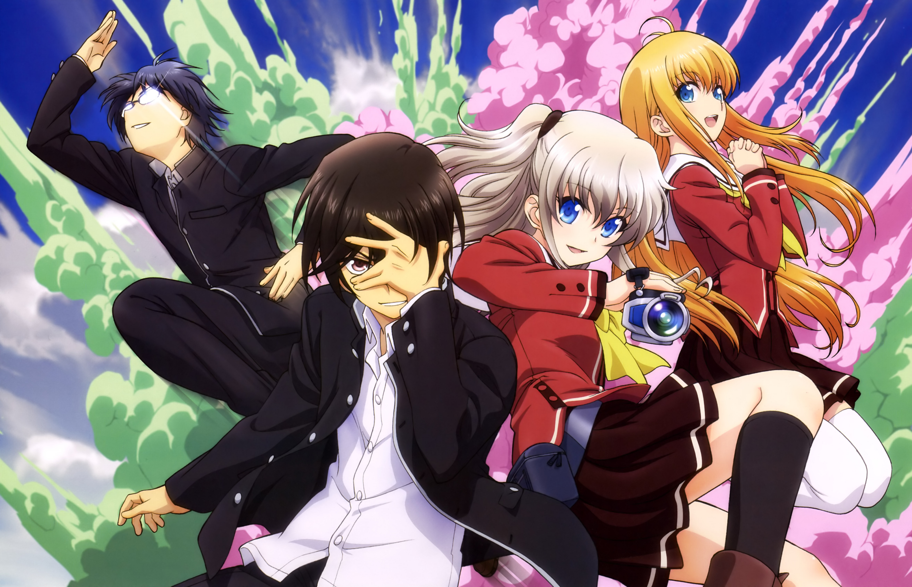

I would like to share my all-time favorite anime, "Charlotte". I was still a kid when I first watched this series, and it really caught my attention. It was one of the reasons why I started to love watching anime. .
The story takes place in a high school in Japan where students with supernatural abilities gather. Their goal is to find and protect other power wielders from a secret government organization that wants to exploit their abilities. It begins when a comet known as "Charlotte" passes near Earth and releases dust into the atmosphere. Some of this dust reaches the ground, and children who inhale it develop various superhuman abilities that awaken once they reach puberty.
Yuu Otosaka, the main character of the series, has just reached puberty and awakened his ability to possess another person's body and take total control of it for a few seconds. At first, he uses this ability to improve his social life and academic status. However, he is eventually caught by Nao Tomori, the acting leader of a student organization that gathers and protects teenagers who have developed supernatural powers.
Because of this, Yuu has no choice but to transfer schools and join the organization. As the story progresses, Yuu discovers that his ability, called Plunder, is one of the most dangerous powers among ability users. It allows him not only to possess people but also to steal their abilities and use them as his own.
In order to protect other ability users, Yuu decides to travel around the world and collect all the supernatural abilities himself. By doing this, he hopes that everyone can return to a normal life and be free from the pursuit of the secret government organization.
As a kid, this series made me curious and wonder what it would feel like to be like Yuu and have superpowers.
| Name | Ability | Description |
| Yu Otosaka | Possession | Can control others for 5 seconds |
| Nao Tomori | Invisibility | Can become invisible to one person |
| Yusa Nishimori | Spirit Channel | Can channel her sister’s spirit |
| Joujirou Takajou | Super Speed | Moves fast but cannot control stopping |